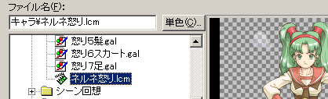
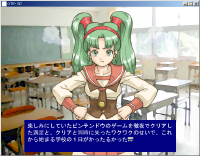

チュートリアル
次は背景の上にキャラクタを出してみます。手順は背景の時とほとんど同じです。
では「画像表示」コマンドを選択してください。

「ファイル名」にはキャラクタのファイルを設定します。ここではシネマファイルを選択しています。
「名前」は「背景」以外なら何でも構いません。ここでは「キャラ」とします。
「横の位置」は「中央寄せ」に、「縦の位置」は「下寄せ」にします。
「プライオリティ」は、背景より手前ならどれでも構いません。ここでは「キャラクタ中間」にします。
「画面効果」はデフォルトのままにしておきます。
「再生タイプ」ですが、今回は動画なので「リピート再生」にします。これでこの画像が消されるまで勝手に動き続けます。
OKをクリックしてダイアログを閉じます。F5を押して実行してみてください。

このようにキャラクタが背景の上に重なって表示されれば成功です。